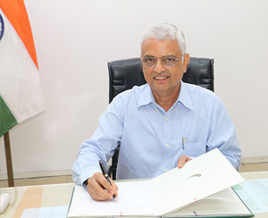

Election Commissioner
|
Shri Om Prakash RawatShri Om Prakash Rawat assumed charge as Election Commissioner of India on 14.08.2015. He is retired Indian Administrative Service (IAS) officer of Madhya Pradesh cadre (Batch 1977). Prior to his appointment as Election Commissioner of India, Shri Rawat had retired as Secretary to the Govt. of India, Ministry of Heavy Industries and Public Enterprises, Department of Public Enterprises on 31.12.2013 on superannuation
Born on 2nd December, 1953, he did his MSc. in Physics from Banaras Hindu University, Varanasi and thereafter MSc. in Social Development Planning in 1989-90 in the United Kingdom. During his long career, he served at various important portfolios at Centre and state level. He served as Collector, Narsinghpur (1983-86) and Indore (1986-88) in Madhya Pradesh. In 1993, in his first stint at Centre, he served as Director/Jt. Secretary in the Defence Ministry. During this tenure, he was deputed to South Africa in May, 1994 as United Nations election observer to oversee first post-apartheid elections in that country. On return from central deputation, he served as Commissioner (Women & Child Development), Registrar (Co-operative Societies), Secretary (Cooperation), Secretary (Agriculture) and State Excise Commissioner in Madhya Pradesh. He was appointed Principal Secretary to Chief Minister in August, 2004, where he continued until January, 2006. Later he also served as Principal Secretary (SC/ST Welfare Department), Govt. of Madhya Pradesh when he received Prime Minister’s Award on 21st April, 2010 for excellence in Public Administration for innovative group initiative “Recognition of Forest Rights”. He took over as Additional Chief Secretary, Narmada Valley Development Department and as Vice-Chairman, Narmada Valley Development Authority in September, 2009 and continued there until April, 2012 when he again went on central deputation.
During his second tenure at Centre, he served as Secretary at Department of Public Enterprises in the Ministry of Heavy Industries from April, 2012 till 31st December, 2013 when he retired. As Secretary, Department of Public Enterprises, he served as ex-officio President of the Governing Council of International Centre for Promotion of Enterprises (ICPE), Ljubljana, Slovenia, an inter-governmental body initially promoted by United Nations.
|